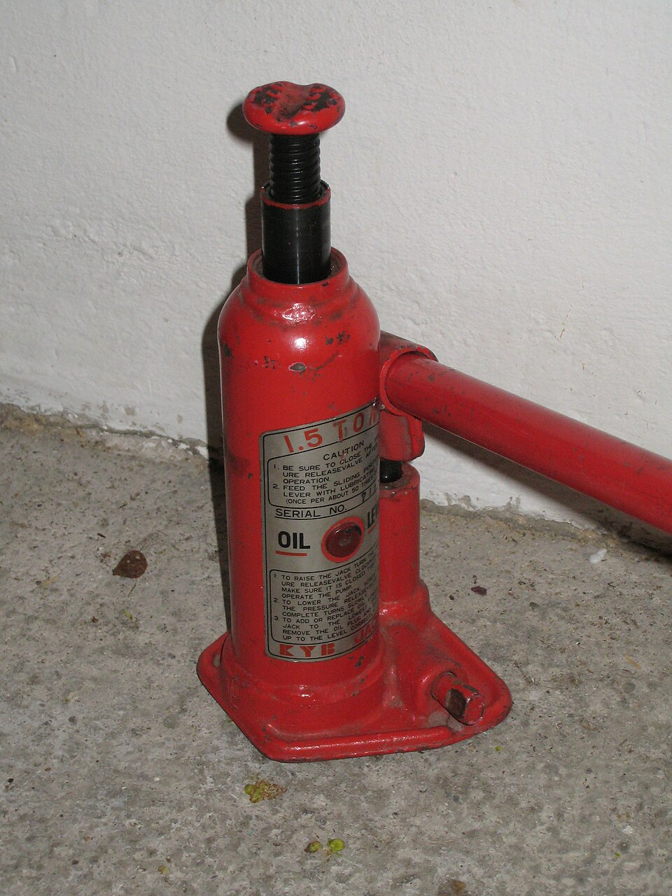

Empujar poco y levantar mucho: la prensa hidráulica, los frenos del auto y el tonel de Pascal
Un mecánico levanta un auto de más de una tonelada empujando una palanca con una mano. Cuando pisás el freno, una fuerza moderada del pie alcanza para frenar cuatro ruedas. Las dos cosas funcionan gracias a la misma idea, que lleva el nombre de Blaise Pascal: un líquido encerrado transmite los cambios de presión a todas partes.
Según OpenStax, el principio de Pascal dice que cuando se aplica un cambio de presión a un fluido encerrado, ese cambio se transmite sin disminuir a todas las partes del fluido y a las paredes del recipiente [1]. Como las moléculas del fluido pueden moverse libremente, llevan la presión a todos lados [1].
Ojo con un error común: el principio no dice que la presión sea la misma en todos los puntos del fluido, porque cerca de la Tierra cambia con la altura. Lo que es igual en todas partes es el cambio de presión [1]. Si sobre el pistón de un cilindro con agua se agrega un peso Mg, la presión arriba aumenta en Mg/A, y la presión en el fondo aumenta exactamente lo mismo [1].
La aplicación más famosa usa dos cilindros conectados, cada uno con un pistón, a la misma altura. La presión que produce una fuerza F1 sobre el pistón chico, de área A1, se transmite sin disminuir al pistón grande, de área A2 [1]. Como las dos presiones son iguales, las fuerzas quedan en proporción a las áreas [1]:
Los apuntes de Metin Güner, de la Universidad de Ankara, llaman al cociente A2/A1 la ventaja mecánica ideal: con un gato hidráulico de cociente 10, una persona puede levantar un auto de 1000 kg aplicando una fuerza equivalente al peso de 100 kg [2]. Pascal ya sabía que la fuerza que ejerce un fluido es proporcional al área, y se dio cuenta de que dos cilindros de áreas distintas permitían ejercer con el más grande una fuerza proporcionalmente mayor [2].
No hay magia: la prensa multiplica la fuerza, pero no la energía. Si el pistón grande tiene diez veces más área, para subirlo un centímetro hay que empujar el chico diez centímetros, porque el volumen de líquido que se desplaza es el mismo de los dos lados. Es como una palanca: ganás fuerza a cambio de recorrido. OpenStax lo dice así: un sistema hidráulico simple puede aumentar la fuerza, pero no puede hacer más trabajo que el que se hace sobre él [1].

OpenStax da el ejemplo de los frenos hidráulicos. El pie empuja el pedal, que por palanca ejerce 500 N sobre un cilindro de 0,5 cm de diámetro. La presión se transmite a los cuatro cilindros de las ruedas, de 2,5 cm de diámetro cada uno [1]. Como el área crece con el cuadrado del diámetro, cada rueda recibe una fuerza 25 veces mayor: 1,25 × 104 N [1]. Y se pueden agregar tantos cilindros como se quiera: cuantos más hay, menos se mueve cada uno [1]. Los mismos principios hacen funcionar gatos, elevadores, prensas y los controles hidráulicos de aviones y máquinas pesadas [2].
Según MacTutor, Blaise Pascal empezó, a partir de 1646, una serie de experimentos sobre la presión atmosférica y en 1647 escribió Nuevos experimentos sobre el vacío, que lo enfrentó con científicos que, como Descartes, no creían en el vacío [3]. En agosto de 1648 observó que la presión de la atmósfera disminuye con la altura [3]. Desde mayo de 1653 trabajó en un Tratado del equilibrio de los líquidos, en el que explica la ley de la presión que lleva su nombre [3]. OpenStax menciona además el famoso «tonel de Pascal», un experimento de 1646 que muestra los efectos de cambiar la presión en un fluido [1]; su lógica se cuenta en la paradoja hidrostática.
Por qué hace falta un líquido: el gato hidráulico usa un fluido incompresible en un tubo en U [1]: lo que se empuja de un lado aparece del otro. Muchos sistemas reales, como los frenos asistidos o los de las topadoras, agregan una bomba con motor que hace la mayor parte del trabajo [1]. Cuánto se comprime cada fluido es el tema de la compresibilidad.
El principio de Pascal es una consecuencia de que un fluido no soporta esfuerzos de corte y lleva los cambios de presión a todas partes. Con él, una fuerza chica sobre un área chica se convierte en una fuerza grande sobre un área grande. Está en el taller, en los frenos y en las grúas, y empezó en los experimentos de un joven francés que discutía con Descartes sobre el vacío.
Pregunta para la comunidad: En una prensa hidráulica, si duplicás el diámetro del pistón grande, ¿cuánto aumenta la fuerza? ¿Y cuánto tenés que empujar el pistón chico para subir el grande la misma altura que antes?